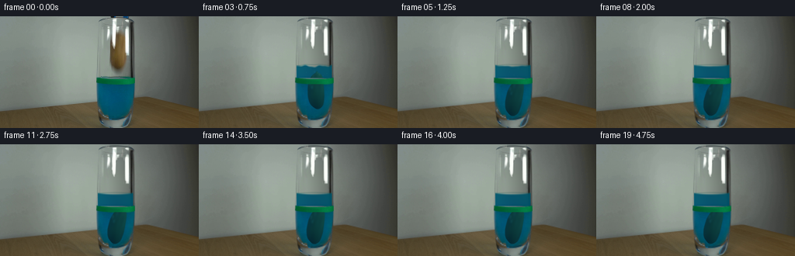
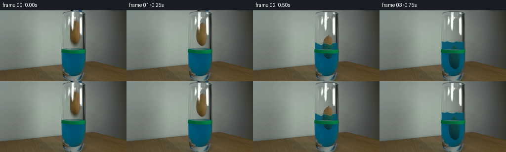
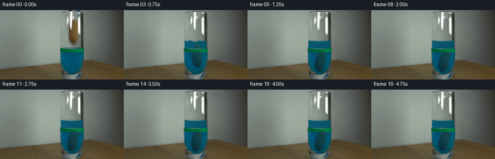
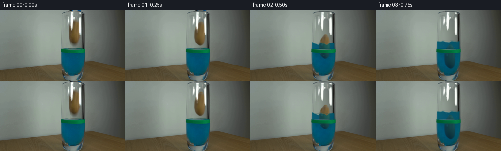
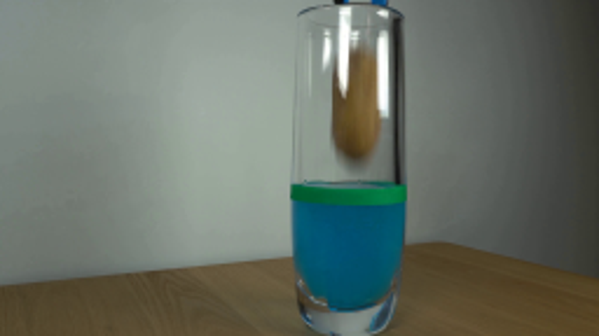
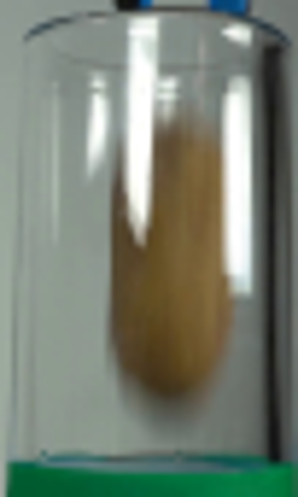
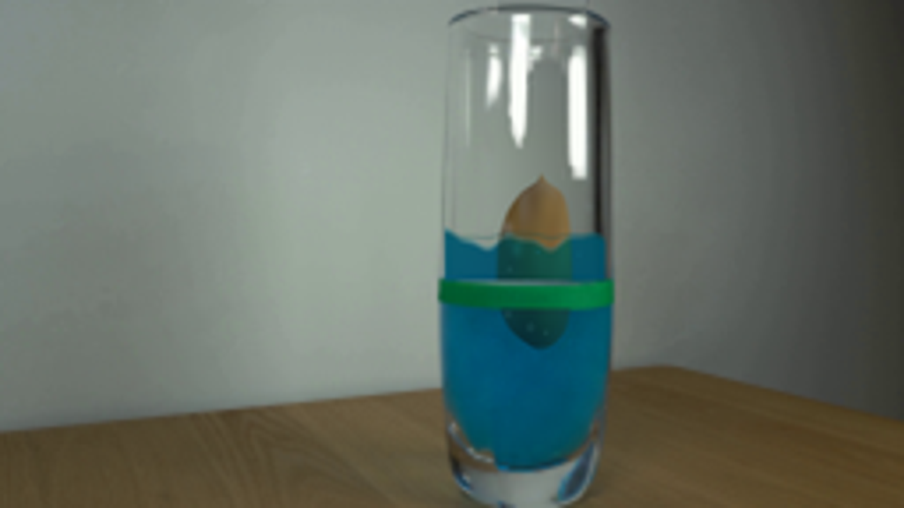
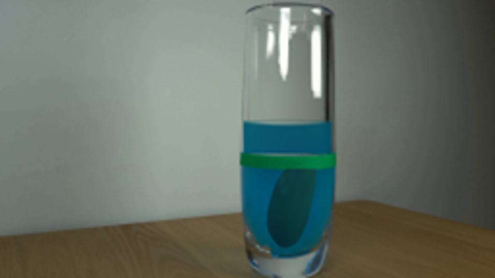

CODING AGENTS AS PIXEL WORLD MODELS
traex/GPT-6.1-Sol · 0142
点击播放 · 原生 RGB 像素
逐轮保存的候选
回放视频、检查图与代码变化。
每份候选均可单独播放。实际图片检查记录在下方工具轨迹中。
候选 01播放与检查图
点击播放 · 原生 RGB 像素


展开代码变化
--- 上一保存版本
+++ 本次保存版本
@@ -0,0 +1,193 @@
+from pathlib import Path
+import numpy as np
+from PIL import Image, ImageDraw, ImageFilter
+from scipy.ndimage import gaussian_filter, map_coordinates
+from scipy.interpolate import PchipInterpolator
+import math
+import artifact_io
+
+ROOT = Path(__file__).resolve().parent
+S=4
+H,W=144,256
+Y,X=np.mgrid[0:H*S,0:W*S].astype(float)
+X=(X+.5)/S-.5;Y=(Y+.5)/S-.5
+orig=np.array(Image.open(ROOT/'first_frame.png').convert('RGB'))
+a=np.array(Image.fromarray(orig).resize((W*S,H*S), Image.Resampling.BICUBIC)).astype(float)
+
+# Reconstruct the clear interior and separate the stationary reflection from the object.
+yy,xx=np.mgrid[0:H,0:W].astype(float)
+ys=np.array([17,20,24,30,40,50,57,62,65,67,69])
+cs=np.array([154,154,153.7,152.6,151.6,151.5,151.7,152.2,152.8,153.0,153])
+rs=np.array([0,.9,5.9,8.9,10.6,10.9,10.0,8.4,6.1,3.7,0])
+center=PchipInterpolator(ys,cs)
+radius=PchipInterpolator(ys,rs)
+
+def potato_shape(x,y):
+ rr=radius(np.clip(y,17,69)); cc=center(np.clip(y,17,69))
+ al=np.clip((rr-np.abs(x-cc)+.4)/1.25,0,1)
+ al*=np.clip((y-17.8)/2,0,1)*np.clip((69-y)/1.6,0,1)
+ return al
+
+alpha=potato_shape(xx,yy)
+u=(xx-center(np.clip(yy,17,69)))/np.maximum(radius(np.clip(yy,17,69)),1)
+v=np.clip((yy-42)/26,-1,1)
+shade=.91+.18*np.clip(u,-1,1)+.065*np.sqrt(np.clip(1-u*u,0,1))-.25*np.maximum(v,0)**3
+P=np.stack([118*shade,93*shade,50*shade],-1)
+# A little irregular, low-contrast skin grain is inherited from the reference.
+mask=(alpha>.92)&(orig[:,:,0]>orig[:,:,1]+8)&(orig[:,:,1]>orig[:,:,2]+9)&(orig[:,:,0]<156)
+weights=gaussian_filter(mask.astype(float),1.0)
+for c in range(3):
+ residue=gaussian_filter((orig[:,:,c].astype(float)-P[:,:,c])*mask,1.0)/np.maximum(weights,.001)
+ P[:,:,c]+=residue*np.clip(weights*2.5,0,1)
+# Closed-form soft cylinder background, taken from the unoccupied sides of the glass.
+left=np.empty((H,3))
+for j in range(H):
+ left[j]=np.median(orig[j,133:137],axis=0)
+left=gaussian_filter(left,1.2,axes=0)
+right=left-np.array([33,37,34])
+q=np.clip((xx-139)/26,0,1)**1.12
+bg=left[:,None,:]*(1-q[:,:,None])+right[:,None,:]*q[:,:,None]
+base0=bg*(1-alpha[:,:,None])+P*alpha[:,:,None]
+white=np.array([251.,254.,249.])
+spec=np.clip(np.mean((orig-base0)/np.maximum(white-base0,25),axis=2),0,1)
+allowed=((xx>143)&(xx<151)&(yy<42))|((xx>158)&(xx<166.8)&(yy>12)&(yy<51))|((xx>136)&(xx<143)&(yy>12)&(yy<35))
+spec*=allowed
+spec=gaussian_filter(spec,.32)
+# The reconstruction is only used where the original hanging potato and its soft shadow were.
+erase=np.clip((xx-138.4)/2,0,1)*np.clip((166-xx)/2,0,1)*np.clip((yy-15)/3,0,1)*np.clip((78-yy)/4,0,1)
+clean=orig.astype(float)*(1-erase[:,:,None])+(bg*(1-spec[:,:,None])+white*spec[:,:,None])*erase[:,:,None]
+cleanHi=np.array(Image.fromarray(np.uint8(np.clip(clean,0,255))).resize((W*S,H*S),Image.Resampling.BICUBIC)).astype(float)
+specHi=np.array(Image.fromarray(np.uint8(spec*255)).resize((W*S,H*S),Image.Resampling.BICUBIC)).astype(float)/255
+pHi=np.array(Image.fromarray(np.uint8(np.clip(P,0,255))).resize((W*S,H*S),Image.Resampling.BICUBIC)).astype(float)
+
+# The small visible jaws retreat above the upper edge, leaving the glass rim fixed.
+cleantop=cleanHi.copy()
+for y in range(4*S):
+ for x in range(141*S,166*S):
+ xp=(x+.5)/S-.5; yp=(y+.5)/S-.5
+ backcol=(a[y,139*S]*.7+a[y,166*S]*.3)
+ rimy=1.25+.009*(xp-148.5)**2
+ edge=np.exp(-((yp-rimy)/.51)**2)*.64
+ cleantop[y,x]=backcol*(1-edge)+np.array([52,64,64])*edge
+
+# Partial-immersion displacement and drag, evaluated at a much finer temporal step than sampling.
+positions=[]; velocities=[]; levels=[]
+dy=0.;vel=0.;dt=.001
+for j in range(4751):
+ t=j*dt
+ if t>.12:
+ # The immersed volume is a tapered ovoid, rather than the bounding rectangle.
+ water=78.
+ for _ in range(8):
+ frac=np.clip((68.4+dy-water)/48.4,0,1)
+ frac=frac*frac*(3-2*frac)
+ water=78-15.3*frac
+ immersed=frac
+ acc=440*(1-.77*immersed)-3.0*immersed*vel-0.022*immersed*vel*abs(vel)
+ vel+=acc*dt;dy+=vel*dt
+ if dy>60.2:
+ dy=60.2
+ if vel>5:vel=-vel*.13
+ else:vel=0
+ else: water=78
+ positions.append(dy);velocities.append(vel);levels.append(water)
+
+# Clip the liquid and object to the interior of the immovable cylinder.
+side=np.clip((X-125.1)/.7,0,1)*np.clip((171.3-X)/.7,0,1)
+bottom=131.9-.013*(X-148.6)**2
+inside=side*np.clip((bottom-Y)/1.1,0,1)
+
+def blend(im,col,al):
+ return im*(1-al[...,None])+col*al[...,None]
+
+def render(i):
+ t=i/4
+ pos=positions[int(t*1000)]; level=levels[int(t*1000)]
+ im=cleanHi.copy()
+ # Pull the blue-black tips upward within the crop on release.
+ im[:4*S,141*S:166*S]=cleantop[:4*S,141*S:166*S]
+ if t<.35:
+ shift=1.1*S
+ tool=(X>141)&(X<166)&(Y<2.6-shift/S)
+ srcy=np.clip(Y+shift/S,0,143)
+ moved=np.stack([map_coordinates(a[:,:,c],[srcy*S,X*S],order=1,mode='nearest') for c in range(3)],-1)
+ im=blend(im,moved,tool.astype(float))
+ # A gentle rocking tilt as the potato encounters the water, then rests on the bottom.
+ ang=(.055*np.sin(t*7)*min(pos/35,1))
+ if t>.85: ang += .19*(1-np.exp(-(t-.85)*4))
+ cx=152.7-1.4*min(pos/60.2,1)
+ cy=43.5+pos
+ ca,sa=np.cos(ang),np.sin(ang)
+ px=(X-cx)*ca+(Y-cy)*sa+152.7
+ py=-(X-cx)*sa+(Y-cy)*ca+43.5
+ objalpha=potato_shape(px,py)*inside
+ obj=np.stack([map_coordinates(P[:,:,c],[py,px],order=1,mode='nearest') for c in range(3)],-1)
+ # The dye has a short red extinction length: submerged skin turns dark olive/cyan.
+ ripple_amp=2.1*np.exp(-max(t-.4,0)*2.3) if t>.32 else 0
+ wave=(np.sin((X-148)*.33+t*11)+.35*np.sin((X-148)*.72-t*8))*ripple_amp
+ front=level+1.05-1.6*((X-148.4)/23)**2+wave
+ under=np.clip((Y-front+.2)/1.5,0,1)
+ depth=np.maximum(Y-front,0)
+ # Clear upper layer of the displaced blue solution is slightly more transmissive.
+ col=np.empty_like(im)
+ col[:,:,0]=0.8
+ col[:,:,1]=78+8*np.exp(-(X-126)**2/190)+4*np.exp(-(X-169)**2/180)+2*np.sin(Y*.12)
+ col[:,:,2]=105+6*np.exp(-(X-128)**2/250)+2*np.sin(Y*.09)
+ wet=(Y<79.2)*under*inside
+ # Preserve the green adhesive level marker as a stationary, opaque foreground band.
+ marker=np.clip((Y-78.8)/.6,0,1)*np.clip((87.1-Y)/.6,0,1)
+ newwater=wet*(1-marker)
+ im=blend(im,col,newwater*.94)
+ # Original submerged region has the same liquid; only gentle light-caustic changes occur.
+ submerged=np.clip((Y-87)/1,0,1)*inside*(Y<129)
+ caustic=(np.sin(X*.43+Y*.35+t*7)*1.5+np.sin(Y*.64-X*.2-t*5))
+ caustic*=np.exp(-max(t-.45,0)*2.7)*min(pos/30,1)
+ im+=submerged[...,None]*caustic[...,None]*np.array([.05,.7,1.])
+ wetobj=obj.copy()
+ trans=np.exp(-depth*.012)
+ wetobj[:,:,0]=obj[:,:,0]*.19*trans
+ wetobj[:,:,1]=obj[:,:,1]*.72*trans+col[:,:,1]*.20
+ wetobj[:,:,2]=obj[:,:,2]*.6*trans+col[:,:,2]*.32
+ objectcol=obj*(1-under[...,None])+wetobj*under[...,None]
+ vis=objalpha*(1-marker)*(.98-.12*under)
+ im=blend(im,objectcol,vis)
+ # The front surface is a thin ellipse and capillary meniscus, not a new solid band.
+ surface=np.clip(1-np.abs(Y-front)/.67,0,1)*side*(1-marker)
+ surfaceColor=np.broadcast_to(np.array([17.,111.,128.]),im.shape).copy()
+ surfaceColor+=np.exp(-((X-137)/9)**2)[...,None]*np.array([24.,21.,18.])
+ im=blend(im,surfaceColor,surface*.51*min(pos/7,1))
+ back=level-1.0+1.1*((X-148.4)/23)**2+.35*wave
+ backmask=np.exp(-((Y-back)/.38)**2)*side*(1-marker)
+ im=blend(im,np.array([10.,78.,82.]),backmask*.32*min(pos/7,1))
+ # A handful of short-lived, small droplets and bubbles at the entry point.
+ if .35<t<1.65:
+ for k in range(7):
+ start=.37+.045*(k%3)
+ age=t-start
+ if age<=0: continue
+ bx=143.8+(k%4)*5.3+np.sin(k*4.1)*.6
+ by=level+11+k*3-age*17
+ if by<front[0,int(bx*S)]+1: continue
+ rr=.38+(k%3)*.17
+ dist=np.sqrt(((X-bx)/1.0)**2+((Y-by)/1.25)**2)
+ ring=np.exp(-((dist-rr)/.17)**2)*.36*np.exp(-age*2)*inside
+ im=blend(im,np.array([74,146,150]),ring)
+ if t<.85:
+ for k in range(3):
+ age=t-.38
+ bx=139.6+k*11.7+(-1 if k==0 else 1)*age*4
+ by=73.5-36*age+85*age*age+k*.6
+ r=.45-.13*age
+ drop=np.clip((r-np.hypot(X-bx,Y-by))/.3+.5,0,1)*side
+ im=blend(im,np.array([16,108,127]),drop*.55)
+ # Fixed glass glare passes in front of both the potato and the liquid.
+ region=np.clip((X-138.4)/2,0,1)*np.clip((166-X)/2,0,1)*np.clip((Y-15)/3,0,1)*np.clip((78-Y)/4,0,1)
+ im=blend(im,white,specHi*region)
+ # Keep the green tape and the outside glass outline exactly registered.
+ im=blend(im,a,marker*.995)
+ out=Image.fromarray(np.uint8(np.clip(im,0,255))).resize((W,H),Image.Resampling.LANCZOS)
+ return np.array(out)
+
+frames=np.stack([orig]+[render(i) for i in range(1,20)])
+artifact_io.save(frames,ROOT)
+Image.fromarray(np.uint8(np.clip(clean,0,255))).resize((768,432)).save(ROOT/'.tmp/clean.png')
候选 02播放与检查图
点击播放 · 原生 RGB 像素


展开代码变化
--- 上一保存版本
+++ 本次保存版本
@@ -18,7 +18,7 @@
yy,xx=np.mgrid[0:H,0:W].astype(float)
ys=np.array([17,20,24,30,40,50,57,62,65,67,69])
cs=np.array([154,154,153.7,152.6,151.6,151.5,151.7,152.2,152.8,153.0,153])
-rs=np.array([0,.9,5.9,8.9,10.6,10.9,10.0,8.4,6.1,3.7,0])
+rs=np.array([0,3.3,6.4,8.9,10.6,10.9,10.0,8.4,6.1,3.7,0])
center=PchipInterpolator(ys,cs)
radius=PchipInterpolator(ys,rs)
@@ -120,7 +120,7 @@
ca,sa=np.cos(ang),np.sin(ang)
px=(X-cx)*ca+(Y-cy)*sa+152.7
py=-(X-cx)*sa+(Y-cy)*ca+43.5
- objalpha=potato_shape(px,py)*inside
+ objalpha=gaussian_filter(potato_shape(px,py),.61*S)*inside
obj=np.stack([map_coordinates(P[:,:,c],[py,px],order=1,mode='nearest') for c in range(3)],-1)
# The dye has a short red extinction length: submerged skin turns dark olive/cyan.
ripple_amp=2.1*np.exp(-max(t-.4,0)*2.3) if t>.32 else 0
@@ -145,9 +145,9 @@
im+=submerged[...,None]*caustic[...,None]*np.array([.05,.7,1.])
wetobj=obj.copy()
trans=np.exp(-depth*.012)
- wetobj[:,:,0]=obj[:,:,0]*.19*trans
- wetobj[:,:,1]=obj[:,:,1]*.72*trans+col[:,:,1]*.20
- wetobj[:,:,2]=obj[:,:,2]*.6*trans+col[:,:,2]*.32
+ wetobj[:,:,0]=obj[:,:,0]*.29*trans
+ wetobj[:,:,1]=obj[:,:,1]*.76*trans+col[:,:,1]*.22
+ wetobj[:,:,2]=obj[:,:,2]*.7*trans+col[:,:,2]*.40
objectcol=obj*(1-under[...,None])+wetobj*under[...,None]
vis=objalpha*(1-marker)*(.98-.12*under)
im=blend(im,objectcol,vis)
@@ -186,7 +186,10 @@
# Keep the green tape and the outside glass outline exactly registered.
im=blend(im,a,marker*.995)
out=Image.fromarray(np.uint8(np.clip(im,0,255))).resize((W,H),Image.Resampling.LANCZOS)
- return np.array(out)
+ out=np.array(out)
+ keep=(xx<123)|(xx>173)|(yy>133)
+ out[keep]=orig[keep]
+ return out
frames=np.stack([orig]+[render(i) for i in range(1,20)])
artifact_io.save(frames,ROOT)
可观测工具轨迹
实际执行的命令与返回图片。
命令 1exit 0
/bin/bash -lc "ls -la && cat prompt.txt && printf '\\n--- RULES ---\\n' && cat GENERATION_RULES.md"
命令 2exit 0
/bin/bash -lc "cat artifact_io.py && python - <<'PY'
from PIL import Image
im=Image.open('first_frame.png'); print(im.size); im.resize((1024,576)).save('.tmp/enlarged.png')
PY"命令 3exit 0
/bin/bash -lc "python - <<'PY'
from PIL import Image,ImageDraw
im=Image.open('first_frame.png').resize((1536,864))
d=ImageDraw.Draw(im)
for x in range(120,177,5):
d.line((x*6,0,x*6,864),fill=(255,100,100),width=1);d.text((x*6,300),str(x),fill=(255,10,10))
for y in range(0,145,10):
d.line((720,y*6,1062,y*6),fill=(255,100,100),width=1);d.text((1050,y*6),str(y),fill=(255,10,10))
im.save('.tmp/grid.png')
PY"命令 4exit 0
/bin/bash -lc "python - <<'PY'
from PIL import Image
im=Image.open('first_frame.png'); im.crop((123,0,174,85)).resize((612,1020)).save('.tmp/crop.png')
PY"命令 5exit 0
/bin/bash -lc "python - <<'PY'
import numpy as np
from PIL import Image
from importlib.util import find_spec
for n in ['numpy','scipy','cv2']:
print(n,find_spec(n))
a=np.array(Image.open('first_frame.png'))
for y in [10,18,22,28,35,42,50,60,65,68,72,76,78,82,88,100,120]:
print('y=',y,' '.join(f'{x}:{tuple(a[y,x])}' for x in [130,135,138,140,142,144,146,148,150,153,156,159,162,164,167]))
PY"命令 6exit 0
/bin/bash -lc "cat > generate.py <<'PY'
from pathlib import Path
import numpy as np
from PIL import Image, ImageDraw, ImageFilter
from scipy.ndimage import gaussian_filter, map_coordinates
from scipy.interpolate import PchipInterpolator
import math
import artifact_io
ROOT = Path(__file__).resolve().parent
S=4
H,W=144,256
Y,X=np.mgrid[0:H*S,0:W*S].astype(float)
X=(X+.5)/S-.5;Y=(Y+.5)/S-.5
orig=np.array(Image.open(ROOT/'first_frame.png').convert('RGB'))
a=np.array(Image.fromarray(orig).resize((W*S,H*S), Image.Resampling.BICUBIC)).astype(float)
# Reconstruct the clear interior and separate the stationary reflection from the object.
yy,xx=np.mgrid[0:H,0:W].astype(float)
ys=np.array([17,20,24,30,40,50,57,62,65,67,69])
cs=np.array([154,154,153.7,152.6,151.6,151.5,151.7,152.2,152.8,153.0,153])
rs=np.array([0,.9,5.9,8.9,10.6,10.9,10.0,8.4,6.1,3.7,0])
center=PchipInterpolator(ys,cs)
radius=PchipInterpolator(ys,rs)
def potato_shape(x,y):
rr=radius(np.clip(y,17,69)); cc=center(np.clip(y,17,69))
al=np.clip((rr-np.abs(x-cc)+.4)/1.25,0,1)
al*=np.clip((y-17.8)/2,0,1)*np.clip((69-y)/1.6,0,1)
return al
alpha=potato_shape(xx,yy)
u=(xx-center(np.clip(yy,17,69)))/np.maximum(radius(np.clip(yy,17,69)),1)
v=np.clip((yy-42)/26,-1,1)
shade=.91+.18*np.clip(u,-1,1)+.065*np.sqrt(np.clip(1-u*u,0,1))-.25*np.maximum(v,0)**3
P=np.stack([118*shade,93*shade,50*shade],-1)
# A little irregular, low-contrast skin grain is inherited from the reference.
mask=(alpha>.92)&(orig[:,:,0]>orig[:,:,1]+8)&(orig[:,:,1]>orig[:,:,2]+9)&(orig[:,:,0]<156)
weights=gaussian_filter(mask.astype(float),1.0)
for c in range(3):
residue=gaussian_filter((orig[:,:,c].astype(float)-P[:,:,c])*mask,1.0)/np.maximum(weights,.001)
P[:,:,c]+=residue*np.clip(weights*2.5,0,1)
# Closed-form soft cylinder background, taken from the unoccupied sides of the glass.
left=np.empty((H,3))
for j in range(H):
left[j]=np.median(orig[j,133:137],axis=0)
left=gaussian_filter(left,1.2,axes=0)
right=left-np.array([33,37,34])
q=np.clip((xx-139)/26,0,1)**1.12
bg=left[:,None,:]*(1-q[:,:,None])+right[:,None,:]*q[:,:,None]
base0=bg*(1-alpha[:,:,None])+P*alpha[:,:,None]
white=np.array([251.,254.,249.])
spec=np.clip(np.mean((orig-base0)/np.maximum(white-base0,25),axis=2),0,1)
allowed=((xx>143)&(xx<151)&(yy<42))|((xx>158)&(xx<166.8)&(yy>12)&(yy<51))|((xx>136)&(xx<143)&(yy>12)&(yy<35))
spec*=allowed
spec=gaussian_filter(spec,.32)
# The reconstruction is only used where the original hanging potato and its soft shadow were.
erase=np.clip((xx-138.4)/2,0,1)*np.clip((166-xx)/2,0,1)*np.clip((yy-15)/3,0,1)*np.clip((78-yy)/4,0,1)
clean=orig.astype(float)*(1-erase[:,:,None])+(bg*(1-spec[:,:,None])+white*spec[:,:,None])*erase[:,:,None]
cleanHi=np.array(Image.fromarray(np.uint8(np.clip(clean,0,255))).resize((W*S,H*S),Image.Resampling.BICUBIC)).astype(float)
specHi=np.array(Image.fromarray(np.uint8(spec*255)).resize((W*S,H*S),Image.Resampling.BICUBIC)).astype(float)/255
pHi=np.array(Image.fromarray(np.uint8(np.clip(P,0,255))).resize((W*S,H*S),Image.Resampling.BICUBIC)).astype(float)
# The small visible jaws retreat above the upper edge, leaving the glass rim fixed.
cleantop=cleanHi.copy()
for y in range(4*S):
for x in range(141*S,166*S):
xp=(x+.5)/S-.5; yp=(y+.5)/S-.5
backcol=(a[y,139*S]*.7+a[y,166*S]*.3)
rimy=1.25+.009*(xp-148.5)**2
edge=np.exp(-((yp-rimy)/.51)**2)*.64
cleantop[y,x]=backcol*(1-edge)+np.array([52,64,64])*edge
# Partial-immersion displacement and drag, evaluated at a much finer temporal step than sampling.
positions=[]; velocities=[]; levels=[]
dy=0.;vel=0.;dt=.001
for j in range(4751):
t=j*dt
if t>.12:
# The immersed volume is a tapered ovoid, rather than the bounding rectangle.
water=78.
for _ in range(8):
frac=np.clip((68.4+dy-water)/48.4,0,1)
frac=frac*frac*(3-2*frac)
water=78-15.3*frac
immersed=frac
acc=440*(1-.77*immersed)-3.0*immersed*vel-0.022*immersed*vel*abs(vel)
vel+=acc*dt;dy+=vel*dt
if dy>60.2:
dy=60.2
if vel>5:vel=-vel*.13
else:vel=0
else: water=78
positions.append(dy);velocities.append(vel);levels.append(water)
# Clip the liquid and object to the interior of the immovable cylinder.
side=np.clip((X-125.1)/.7,0,1)*np.clip((171.3-X)/.7,0,1)
bottom=131.9-.013*(X-148.6)**2
inside=side*np.clip((bottom-Y)/1.1,0,1)
def blend(im,col,al):
return im*(1-al[...,None])+col*al[...,None]
def render(i):
t=i/4
pos=positions[int(t*1000)]; level=levels[int(t*1000)]
im=cleanHi.copy()
# Pull the blue-black tips upward within the crop on release.
im[:4*S,141*S:166*S]=cleantop[:4*S,141*S:166*S]
if t<.35:
shift=1.1*S
tool=(X>141)&(X<166)&(Y<2.6-shift/S)
srcy=np.clip(Y+shift/S,0,143)
moved=np.stack([map_coordinates(a[:,:,c],[srcy*S,X*S],order=1,mode='nearest') for c in range(3)],-1)
im=blend(im,moved,tool.astype(float))
# A gentle rocking tilt as the potato encounters the water, then rests on the bottom.
ang=(.055*np.sin(t*7)*min(pos/35,1))
if t>.85: ang += .19*(1-np.exp(-(t-.85)*4))
cx=152.7-1.4*min(pos/60.2,1)
cy=43.5+pos
ca,sa=np.cos(ang),np.sin(ang)
px=(X-cx)*ca+(Y-cy)*sa+152.7
py=-(X-cx)*sa+(Y-cy)*ca+43.5
objalpha=potato_shape(px,py)*inside
obj=np.stack([map_coordinates(P[:,:,c],[py,px],order=1,mode='nearest') for c in range(3)],-1)
# The dye has a short red extinction length: submerged skin turns dark olive/cyan.
ripple_amp=2.1*np.exp(-max(t-.4,0)*2.3) if t>.32 else 0
wave=(np.sin((X-148)*.33+t*11)+.35*np.sin((X-148)*.72-t*8))*ripple_amp
front=level+1.05-1.6*((X-148.4)/23)**2+wave
under=np.clip((Y-front+.2)/1.5,0,1)
depth=np.maximum(Y-front,0)
# Clear upper layer of the displaced blue solution is slightly more transmissive.
col=np.empty_like(im)
col[:,:,0]=0.8
col[:,:,1]=78+8*np.exp(-(X-126)**2/190)+4*np.exp(-(X-169)**2/180)+2*np.sin(Y*.12)
col[:,:,2]=105+6*np.exp(-(X-128)**2/250)+2*np.sin(Y*.09)
wet=(Y<79.2)*under*inside
# Preserve the green adhesive level marker as a stationary, opaque foreground band.
marker=np.clip((Y-78.8)/.6,0,1)*np.clip((87.1-Y)/.6,0,1)
newwater=wet*(1-marker)
im=blend(im,col,newwater*.94)
# Original submerged region has the same liquid; only gentle light-caustic changes occur.
submerged=np.clip((Y-87)/1,0,1)*inside*(Y<129)
caustic=(np.sin(X*.43+Y*.35+t*7)*1.5+np.sin(Y*.64-X*.2-t*5))
caustic*=np.exp(-max(t-.45,0)*2.7)*min(pos/30,1)
im+=submerged[...,None]*caustic[...,None]*np.array([.05,.7,1.])
wetobj=obj.copy()
trans=np.exp(-depth*.012)
wetobj[:,:,0]=obj[:,:,0]*.19*trans
wetobj[:,:,1]=obj[:,:,1]*.72*trans+col[:,:,1]*.20
wetobj[:,:,2]=obj[:,:,2]*.6*trans+col[:,:,2]*.32
objectcol=obj*(1-under[...,None])+wetobj*under[...,None]
vis=objalpha*(1-marker)*(.98-.12*under)
im=blend(im,objectcol,vis)
# The front surface is a thin ellipse and capillary meniscus, not a new solid band.
surface=np.clip(1-np.abs(Y-front)/.67,0,1)*side*(1-marker)
surfaceColor=np.broadcast_to(np.array([17.,111.,128.]),im.shape).copy()
surfaceColor+=np.exp(-((X-137)/9)**2)[...,None]*np.array([24.,21.,18.])
im=blend(im,surfaceColor,surface*.51*min(pos/7,1))
back=level-1.0+1.1*((X-148.4)/23)**2+.35*wave
backmask=np.exp(-((Y-back)/.38)**2)*side*(1-marker)
im=blend(im,np.array([10.,78.,82.]),backmask*.32*min(pos/7,1))
# A handful of short-lived, small droplets and bubbles at the entry point.
if .35<t<1.65:
for k in range(7):
start=.37+.045*(k%3)
age=t-start
if age<=0: continue
bx=143.8+(k%4)*5.3+np.sin(k*4.1)*.6
by=level+11+k*3-age*17
if by<front[0,int(bx*S)]+1: continue
rr=.38+(k%3)*.17
dist=np.sqrt(((X-bx)/1.0)**2+((Y-by)/1.25)**2)
ring=np.exp(-((dist-rr)/.17)**2)*.36*np.exp(-age*2)*inside
im=blend(im,np.array([74,146,150]),ring)
if t<.85:
for k in range(3):
age=t-.38
bx=139.6+k*11.7+(-1 if k==0 else 1)*age*4
by=73.5-36*age+85*age*age+k*.6
r=.45-.13*age
drop=np.clip((r-np.hypot(X-bx,Y-by))/.3+.5,0,1)*side
im=blend(im,np.array([16,108,127]),drop*.55)
# Fixed glass glare passes in front of both the potato and the liquid.
region=np.clip((X-138.4)/2,0,1)*np.clip((166-X)/2,0,1)*np.clip((Y-15)/3,0,1)*np.clip((78-Y)/4,0,1)
im=blend(im,white,specHi*region)
# Keep the green tape and the outside glass outline exactly registered.
im=blend(im,a,marker*.995)
out=Image.fromarray(np.uint8(np.clip(im,0,255))).resize((W,H),Image.Resampling.LANCZOS)
return np.array(out)
frames=np.stack([orig]+[render(i) for i in range(1,20)])
artifact_io.save(frames,ROOT)
Image.fromarray(np.uint8(np.clip(clean,0,255))).resize((768,432)).save(ROOT/'.tmp/clean.png')
PY
python generate.py"命令 7exit 0
/bin/bash -lc "python - <<'PY'
from PIL import Image
for f in ['01','02','03','06','19']:
Image.open('frames/'+f+'.png').resize((1024,576)).save('.tmp/f'+f+'.png')
PY"命令 8exit 0
/bin/bash -lc "python - <<'PY'
p='generate.py'
s=open(p).read().replace('rs=np.array([0,.9,5.9,8.9,10.6,10.9,10.0,8.4,6.1,3.7,0])','rs=np.array([0,3.3,6.4,8.9,10.6,10.9,10.0,8.4,6.1,3.7,0])')
s=s.replace('objalpha=potato_shape(px,py)*inside','objalpha=gaussian_filter(potato_shape(px,py),.61*S)*inside')
s=s.replace(\"wetobj[:,:,0]=obj[:,:,0]*.19*trans\", \"wetobj[:,:,0]=obj[:,:,0]*.29*trans\")
s=s.replace(\"wetobj[:,:,1]=obj[:,:,1]*.72*trans+col[:,:,1]*.20\", \"wetobj[:,:,1]=obj[:,:,1]*.76*trans+col[:,:,1]*.22\")
s=s.replace(\"wetobj[:,:,2]=obj[:,:,2]*.6*trans+col[:,:,2]*.32\", \"wetobj[:,:,2]=obj[:,:,2]*.7*trans+col[:,:,2]*.40\")
s=s.replace('return np.array(out)', 'out=np.array(out)\\n keep=(xx<123)|(xx>173)|(yy>133)\\n out[keep]=orig[keep]\\n return out')
open(p,'w').write(s)
PY
python generate.py"命令 9exit 1
/bin/bash -lc "python - <<'PY'
import numpy as np
from PIL import Image
p=np.load('pixels.npz')['pixels'];print(p.shape,p.dtype)
a=np.array(Image.open('frames/00.png'));b=np.array(Image.open('first_frame.png'));assert np.array_equal(a,b)
print('First frame exact; 20 frames saved.')
PY
command -v ffmpeg"视觉工具实际返回图片 1

视觉工具实际返回图片 2
视觉工具实际返回图片 3

视觉工具实际返回图片 4

视觉工具实际返回图片 5
视觉工具实际返回图片 6

视觉工具实际返回图片 7

保存候选 2 份；完成命令 9 次；可验证图片返回 7 张。原始 API 响应与完整日志保留在本地。